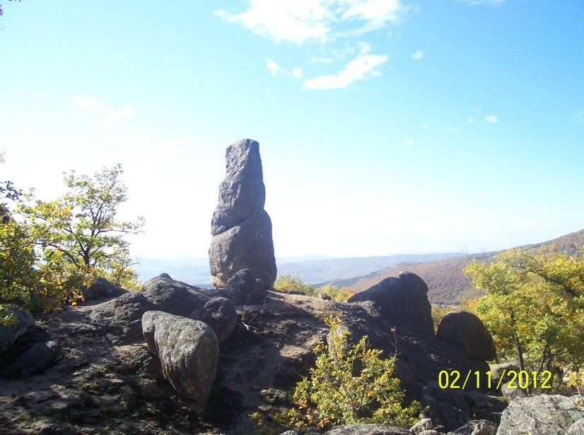
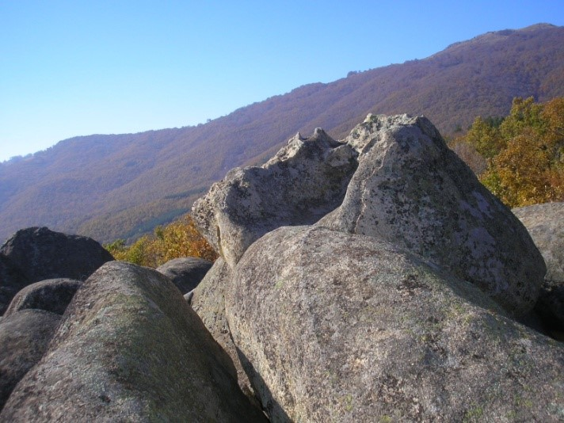

На 12 км северно от Стрелча, по пътя към Копривщица, в местността Кулата е открит скален мегалитен комплекс, който е имал важна роля в мито-ритуалните практики на древните народи, живели на това място, смятат учените. Впечатляващото тук е, че наред с хоризонталните кръгли вкопавания има множество вертикални ниши, които са характерни за Източните Родопи. Същинската част на светилището се намира върху голям скален блок, намиращ се на около 50 м надолу по пътеката. Сравнително малко по размери, то впечатлява с архитектурните си решения. От северната му страна е разположено голямо вкопаване тип “казан”. Пред него е оформена “пиростия” - съоръжение, свързано с гадателски практики и с мита за Дионис. Скално изсечена арка, оформена от един монолит, е единствената от такъв тип на територията на Стрелча от известните досега. Кулминацията на светилището е скален трон, поставен върху две игловидни скали, с приблизително кръгла форма.
Източната му част е оформена седалковидно. Когато човек седне на трона пред очите му се разкрива спираща дъха гледка - целият южен хоризонт на 180 градуса като в далечината се синеят склоновете на Родопите и Рила. На по-ниското ниво около трона се оформя пътека, която обхожда подножието му. Интересен е фактът, че тронът както и арката са ориентирани към изгрева на пролетното слънце, което загатва, че мястото не е случайно и е служело за провеждане на езически ритуали, свързани с възраждащата се природа. На север пътеката се разширява в площадка, която стъпаловидно слиза към подножието на масива. Площадката и околните скали са осеяни с вкопавания с правилни форми, които не будят съмнение за изкуствения им произход. В южното подножие на трона пътеката преминава под скална арка, която сякаш е изсечена в скалата.
На юг от основния скален масив, на сравнително добре оформена скална площадка, се намира изправен скален стълб, т. нар. “менхир”. Скалите около него също са осеяни с вкопавания. На семантично ниво менхирът е един от най-старите символи на мъжкото начало и на слънцето. Те са считани за едни от най-старите астрономически уреди за изчисляване на времето. Комплексът е на няколко нива и не заема голяма площ, но въпреки това е много представителен. Въздействието се усилва и от многото скално изсечени ями и канали в околните скали. По мнението на проф. д.н.к. Васил Марков това е тракийски мегалитен храм, уникален за тракийската култура и засега единствен по рода си от известните ни. Според доц. д-р Алексей Гоцев, ръководител на теренните проучвания, това е паметник, който поставя повече въпроси, отколкото отговори. Проучванията на обекта ще внесат допълнителна яснота за организирането на сакралното пространство в древна Тракия.